Винный бар.

Оборудование винного бара
Винные бары (коктейль-бары) могут быть самостоятельными предприятиями, но чаще их организовывают при гостиницах, ресторанах и кафе. В этих случаях их желательно оборудовать в изолированных помещениях.
Характерной особенностью бара является высокий прилавок-стойка, с наружной стороны которой располагают высокие сиденья (табуреты). Стойка имеет две столешницы: верхнюю, сравнительно не широкую, для подачи напитков сидящим за стойкой посетителям, и нижнюю, более широкую, для приготовления напитков (рабочее место бармена). Обе поверхности покрывают гигиенической пластмассой. В нижней части стойки на полках размещаются необходимый запас продуктов, винно-водочных изделий и подсобный инвентарь. Высота рабочего места, равная 0,85-0,90 м, наиболее удобна для работы за прилавком.
Длина барной стойки может быть различной; при расчете исходят из нормы 0,6 м на одно место. Бармен должен обслуживать за стойкой одновременно 10 человек (т. е. фронт его работы — 6 м длины прилавка). Форма стойки также может быть различной (в виде подковы, V-образной и др.) в зависимости от конфигурации торгового зала.[1] На рис. 1 изображена стойка в одном из зарубежных баров.
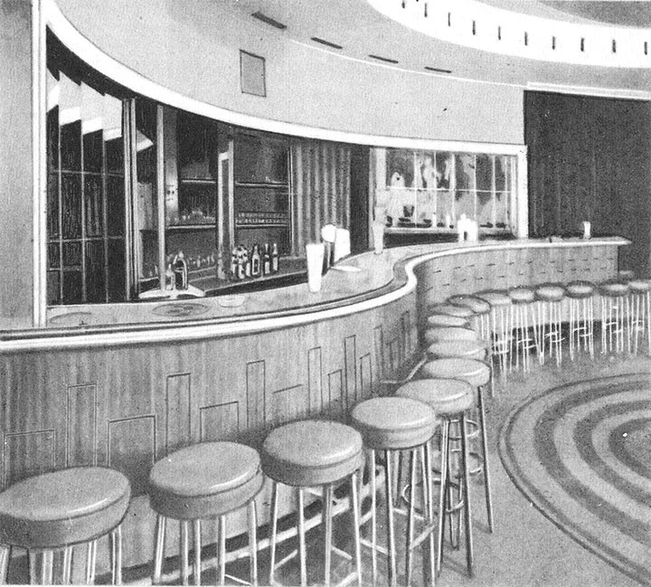
Рис. 1. Барная стойка
Для удобства посетителей, обслуживаемых непосредственно за стойкой бара, высота которой должна быть не более 1,2 м, табуреты устанавливаются высотой 0,8 м. Они могут иметь различную форму и изготовляются из дерева или металла с мягкими сиденьями, обтянутыми кожей или драпировочной тканью.
Стойка должна непосредственно примыкать к производственному помещению и к посудомоечной, что обеспечивает оперативность всего процесса обслуживания.
Для приготовления кофе на барной стойке устанавливают механическую кофеварку.
На стене, за рабочим местом бармена, укрепляют настенную витрину (с подсветом) для демонстрации спиртных напитков, кондитерских изделий (шоколад в коробках и плитках и др.), табачных изделий.
Для тех посетителей, которые не любят сидеть за барной стойкой, в зале устанавливаются столы и стулья современных типов, несколько ниже ресторанной мебели (рис. 2).
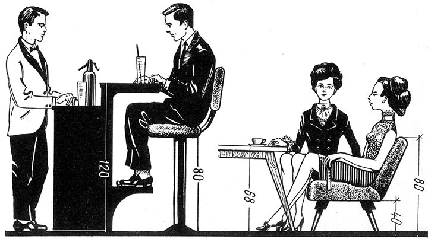
Рис. 2. Размеры мебели для баров
Большое значение для удобства обслуживания посетителей и рационального использования площади торгового зала имеет правильная расстановка мебели. К каждому столу должен быть свободный доступ, расстояние между столами в главном проходе принимают равным 1,2 м, во второстепенном проходе — 0,75 м и в смежном — 0,3 м. Расстановка столов зависит от планировки торгового зала, расположения окон, дверей, места расположения барной стойки. Для квадратных столов, которые чаще всего используются в баре, более рациональная расстановка — диагональная (диагонали столов параллельны стенам зала).
Так как в баре столы не сервируются, серванты и подсобные столики в зале не устанавливают, но иногда используют несколько круглых столиков на одной ножке, рассчитанных на один небольшой поднос.
В крупных барах оборудуется низкая эстрада для оркестра, в небольших — устанавливается музыкальный проигрыватель-автомат типа «Меломан» (ПНР). В танцевальных барах предусматривается площадка для танцев — обычно в центре зала.
Освещение в баре должно быть неярким, мягким (светильники могут быть скрыты так, чтобы свет отражался от стен и потолка). В сочетании с соответствующим оформлением зала оно должно создавать особую атмосферу уюта, с тем чтобы пребывание в баре было для посетителей приятным отдыхом.
При оборудовании бара особое внимание надо обратить на оснащение его холодильным оборудованием, так как коктейли, как правило, подаются в охлажденном виде.
В подсобном помещении устанавливают холодильные шкафы типа ШХ (ШХ-0,6, ШХ-0,8, ШХ-1,2) для хранения продуктов и напитков. Здесь же монтируется малогабаритный льдогенератор, в котором изготовляется пищевой лед призматической формы весом по 16–22 г. Бытовые холодильники типа «ЗИЛ» или «Саратов», шкаф ШХ-0,4 устанавливают непосредственно в торговом зале, за стойкой, рядом с рабочим местом бармена.
В подсобном помещении должна быть установлена настольная электроплита для приготовления пуншей, грогов и др. Если бар является самостоятельным предприятием, то в его подсобном помещении помощник бармена — повар приготовляет и закуски, и тосты, используя малогабаритные специализированные тепловые аппараты.
В этих барах для хранения мороженого, замороженных фруктов и ягод устанавливаются низкотемпературные прилавки П-10, ПН-02, рассчитанные на поддержание в них температуры от -6 °C до -10 °C, или низкотемпературный прилавок — витрина ВН-П, освещаемый изнутри лампами дневного света. Бар должен быть оснащен и малогабаритной посудомоечной машиной.
Бармен и его обязанности
Культура обслуживания посетителей в баре в основном зависит от квалификации бармена. Он должен обладать достаточными профессиональными навыками, систематически совершенствовать свое мастерство, повышать культурный уровень.
Являясь материально ответственным лицом, бармен несет полную ответственность за сохранность товарно-материальных ценностей в баре.
Основные обязанности бармена сводятся к следующему:
— перед началом рабочего дня бармен составляет заявку на получение товаров в необходимом ассортименте и количестве;
— получает товары из кладовых и готовые изделия из производственных цехов, контролируя качество продукции;
— красиво оформляет витрину, стремясь возможно полнее представить ассортимент бара;
— приготовляет смешанные и другие напитки, включенные в меню, и обслуживает посетителей за стойкой, а при необходимости — и за столиками;
— популяризирует фирменные напитки и закуски, используя различные виды рекламы;
— информирует руководство предприятия о всех замечаниях и пожеланиях посетителей;
— ежедневно составляет бухгалтерский отчет о движении продукции и тары и сдает выручку;
— ведет учет посуды и инвентаря;
— отвечает за санитарное состояние бара и подсобных помещений;
— строго соблюдает личную гигиену, требует ее соблюдения от других работников бара.
Немаловажное значение имеет внешний вид бармена. Форменная одежда его особого покроя (рондель) должна быть всегда аккуратно отутюженной и чистой.
Рабочее место бармена
Для четкого обслуживания необходима правильная организация рабочего места бармена.
Инвентарь, посуду и продукты следует размещать на барной стойке на определенных местах, так чтобы они всегда находились под рукой. Беспорядочное расположение посуды, приборов, бутылок и др. создает у посетителей впечатление небрежности и неаккуратности в работе бармена.
Вина и другие жидкие компоненты размещают на рабочем месте с правой стороны. Напитки в бутылках ставят в один ряд, сначала крепкие (коньяк, водка, ром), за ними ликеры, крепленые, столовые и десертные вина. Перед бутылками ставят графины с сиропами и соками.
Лимон, нарезанный ломтиками, фрукты, нарезанные небольшими кубиками, заготовленный в специальных ведерках пищевой лед располагают на рабочем месте с левой стороны. Здесь же помещают подносы с чистой посудой для коктейлей.
Бармен располагает на рабочем месте в удобном порядке и весь прочий инвентарь (о нем сказано ниже).
С правой стороны, на полу, ставят ведро с педалью или бачок для отходов и мусора. На специальной вешалке вешают полотенце, которым бармен периодически протирает прилавок.
В процессе работы каждый предмет бармен ставит на свое место, Привыкает, таким образом, к определенному порядку и не тратит лишнего времени на поиски.
Инвентарь бармена и посуда для коктейлей
Шейкер является самым необходимым для бармена предметом, с его помощью приготовляется большинство смешанных напитков. Изготовляется шейкер из металла, который не влияет на качество смешиваемых напитков (мельхиор, серебро, нержавеющая сталь). Шейкер представляет собой герметический сосуд, состоящий из двух частей, которые вставляются одна навстречу другой за счет того, что диаметр кромки нижней части чуть меньше, чем верхней (рис. 3). В верхнюю часть шейкера вставлено сито, имеющее дополнительный запорный колпачок; оно служит для задержания в шейкере кусочков льда и твердых примесей при выливании из него готового напитка.
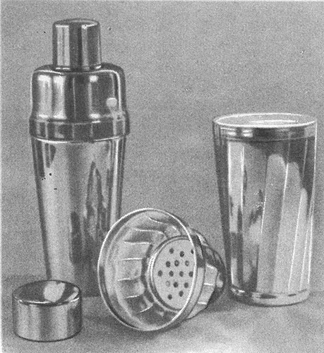
Рис. 3. Шейкер
Процесс смешивания начинается с того, что в стакан шейкера кладут ложечкой или щипцами два-три кусочка льда величиной с грецкий орех, при этом сосуд охлаждается. Затем подготавливают необходимые компоненты и расставляют таким образом, чтобы их можно было очень быстро ввести в сосуд, предварительно слив из шейкера воду растаявшего льда.
При заполнении сосуда следует учитывать, что если сначала вливать в него наполнители, входящие в рецептуру в наименьшем объеме, то при вливании остальных компонентов уже происходит значительное перемешивание напитка.
Не надо стараться заполнить шейкер до краев; достаточное свободное пространство необходимо, так как объем содержимого при взбивании увеличивается.
Наполненный шейкер закрывают и встряхивают коротко и энергично обеими руками приблизительно на уровне плечей (рис. 4). В течение 10–15 сек. достигается полное смешивание компонентов и быстрое охлаждение содержимого.
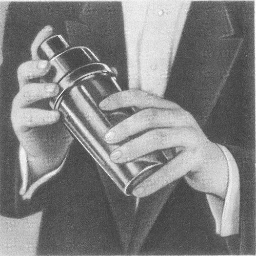
Рис. 4. Так встряхивают шейкер
Перед встряхиванием шейкер рекомендуется обертывать полотняной салфеткой, чтобы ему не передавалось тепло от рук. Это предотвратит также попадание жидкости на одежду бармена и сидящих вблизи гостей при возможном протекании сосуда.
После приготовления каждого напитка сосуд для смешивания следует ополаскивать. Хранят шейкер в открытом виде.
Напитки с легко перемешивающимися компонентами можно приготовлять в высоком стеклянном стакане при помощи ложки с длинной ручкой. Для этого применяется конусный стакан из толстого стекла емкостью не менее 0,5 л. С таким же успехом вместо толстостенного стакана можно использовать нижнюю часть шейкера.
Смешанные напитки, приготовленные в стакане, сливают в бокал или фужер через небольшое ситечко, благодаря чему кусочки льда и другие твердые частицы остаются в сосуде. Для процеживания напитков удобно применять также стрейнер. Это плоское сито с ручкой, внутри ободка которого укреплены пружинки. Стрейнер надевается на стакан и с помощью пружинок прочно удерживается на нем.
Для приготовления газированной воды в барах используют сифоны. Газированную воду вводят в смешанный напиток так, чтобы избежать его выплескивания под струей воды. Стакан или бокал держат у отверстия наклоненного сифона и постепенно надавливают на рычажок клапана (рис. 5). Во время наполнения стакана его медленно отводят от отверстия сифона.
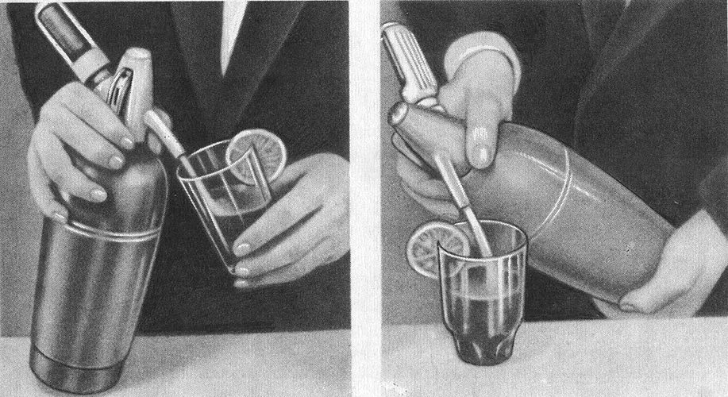
Рис. 5. Пользование сифоном
В тех местах, где есть специальные зарядные станции, в барах используют сифоны (большей емкости, чем обычные), заряженные готовой газированной водой.
Кроме названных выше предметов, бармен постоянно использует в своей работе посуду и инструменты, которые изображены на рис. 6.
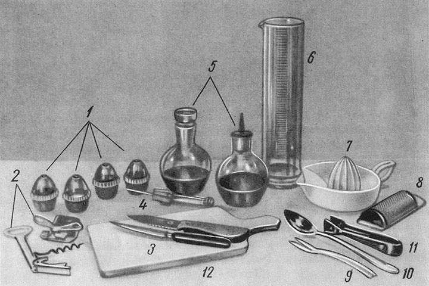
Рис. 6. Посуда и инвентарь бармена:
1 — сосуды для перца, корицы, соли и других специй; 2 — инструменты для открывания консервных банок; 3 — ножи из нержавеющей стали; 4 — щипчики для закусок; 5 — сосуды для сиропов, лимонного сока и т. д.; 6 — мензурка; 7 — соковыжималка; 8 — терка для цедры или шоколада; 9 — вилка для фруктов и ягод; 10 — ложка с длинной ручкой для перемешивания напитка; 11 — щипцы для льда; 12 — доска для нарезки фруктов
Для подачи коктейлей в барах используют разнообразную стеклянную посуду. В связи с возросшей популярностью коктейлей в последнее время определились стиль и назначение бокалов, фужеров и рюмок для винных баров, причем форма этой посуды отвечает как современным эстетическим требованиям, так и требованиям целесообразности ее применения.
Однако слишком строгих правил в отношении использования определенного вида посуды для подачи того или иного напитка придерживаться не обязательно.
В винных барах применяют (рис. 7):
— конусные стаканы (100–250 см) — для крюшонов, охлажденных пуншей, лимонадов;
— шарообразные бокалы (100–200 см) — для коктейлей с фруктами и десертных;
— узкие конусные бокалы (100–200 см) — для слоистых и игристых коктейлей;
— широкие конусные бокалы (100–200 см) — для крепких, игристых и десертных коктейлей;
— высокие конусные бокалы (150–250 см) — для игристых коктейлей и коктейлей с яйцом;
— рюмки-креманки — для коктейлей с фруктами, мороженым и сливками;
— тюльпанообразные бокалы (150–250 см) — для коктейлей с фруктами, напитков гляссе;
— чашки для пуншей, грогов, глинтвейнов; крюшонницы и крюшонные чашки;
— кувшины — для лимонадов и соков.
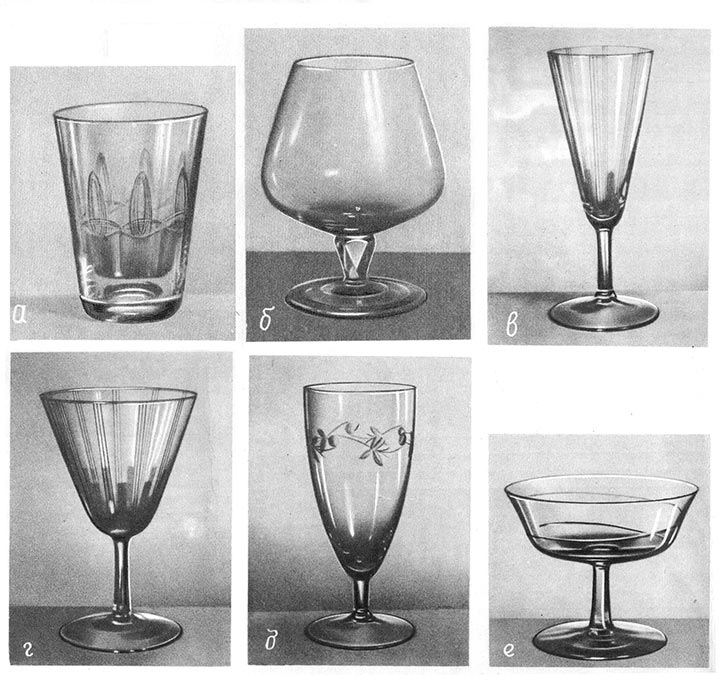
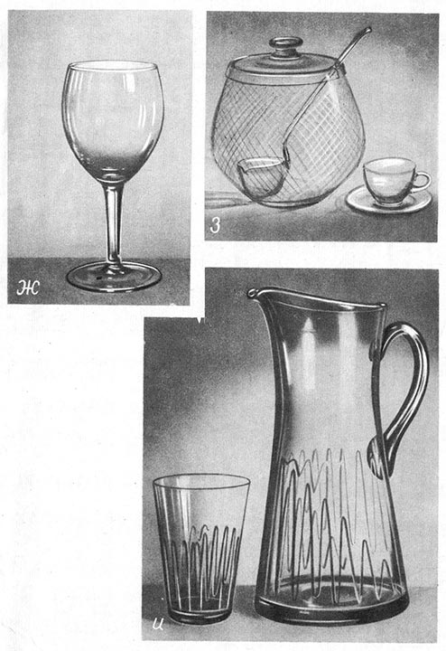
Рис. 7. Посуда для коктейлей:
а — конусный стакан; б — шарообразный бокал; в — узкий конусный бокал; г — широкий конусный бокал; д — высокий конусный бокал; е — рюмка-креманка; ж — тюльпанообразный бокал; з — крюшонница и крюшонная чашка; и — кувшин и стакан
Коктейли принято пить через соломинку. Изготовляются соломинки из полиэтилена, полистирола или соломы; предназначаются они только для разового пользования.
К коктейлям, гарнированным фруктами, кроме того, подают ложечки или «пики» (небольшие деревянные или пластмассовые заостренные палочки).
Меню винного бара
В ассортимент винных баров, кроме коктейлей и других смешанных напитков, входят крепкие спиртные напитки высших сортов, шампанское, безалкогольные напитки, кондитерские изделия, специальные закуски, фрукты. Здесь продают также табачные изделия.
Карточка меню винного бара должна информировать посетителей обо всей этой продукции. Эффектно оформленная, она может служить также своеобразной рекламой.
Ассортимент бара приводится в меню в таком порядке:
— крепкие коктейли;
— десертные коктейли;
— коктейли с фруктами;
— игристые коктейли;
— коктейли с яйцом;
— крюшоны;
— пунши, глинтвейны, гроги;
— закуски;
— крепкие спиртные напитки;
— шампанское, безалкогольные напитки;
— кофе черный;
— табачные изделия.
Желательно, чтобы в карточке меню был отпечатан типографским способом весь ассортимент бара, а цены отпускаемых в данный день изделий проставлены на пишущей машинке.
Для ознакомления посетителей с составом смешанных напитков в меню под наименованием каждого напитка указываются компоненты (и их количество), из которых он приготовляется.
Ввиду того что некоторые смешанные напитки имеют довольно сложные названия, что вызывает порой затруднения при заказе, в меню перед каждым наименованием напитка ставится порядковый номер, так что посетителю при заказе достаточно назвать его.
Составляя меню, бармен должен включать в него смешанные напитки, пользующиеся наибольшей популярностью у посетителей. При этом он должен стремиться к тому, чтобы ассортимент их был возможно разнообразнее.
Некоторые правила приготовления смешанных напитков
Прежде всего, бармену следует знать, что в зависимости от крепости алкогольные смешанные напитки приготовляют в большем или меньшем объеме на порцию.
Коктейли с большим содержанием алкоголя — крепкие, десертные и слоистые — приготовляют, как правило, в объеме от 50 до 100 мл. Смешанные напитки, содержащие в своем составе небольшое количество алкогольных компонентов (игристые коктейли, коктейли с яйцом, крюшоны и т. д.) — в объеме от 100 до 200 и более мл.
Качество изготовляемых напитков, естественно, в первую очередь зависит от применяемых ингредиентов. Например, коктейль, приготовленный с коньяком КВ или Юбилейный, будет, конечно, иметь более приятный аромат, чем такой же коктейль, приготовленный на коньяке «три звездочки».
Разрабатывая рецептуры смешанных напитков, не следует применять слишком много компонентов, так как чаще это плохо отражается на вкусовой гамме готового напитка. Все компоненты напитка должны хорошо сочетаться по вкусу, их ароматы, не заглушая один другой, должны создавать новый приятный аромат, или, как принято говорить, «букет». Очень важно также, чтобы вид коктейля был красочным.
В большинстве случаев для приготовления смешанных напитков необходим пищевой лед. В барах удобнее всего использовать лед, приготовляемый в льдогенераторах небольшими кубиками, а не брусками; такой лед легче дробить.
Используют лед различной степени измельчения. Для смешивания напитков, приготовляемых в малом объеме, лучше брать куски льда величиной с грецкий орех: такой лед не успевает быстро растаять и заметно разбавить напиток.
Для приготовления коктейлей с фруктами, игристых, крюшонов и других напитков, приготовляемых сравнительно большими порциями, используют мелкодробленый лед (лед-фрапэ). Для быстроты обслуживания крупные и мелкие куски льда рекомендуется хранить на рабочем месте в разной посуде — в ведерках из нержавеющей стали или мельхиоровой посуде, на дно которой вставляют металлическую сетку для стока талой воды. Еще лучше хранить лед в специальных термосах.
Лед-фрапэ обычно приготовляют заранее. Для этого куски льда заворачивают в чистую плотную ткань и дробят при помощи деревянного молотка. Это не должно происходить на рабочем месте бармена перед глазами посетителей. Все компоненты для коктейлей, подаваемых в охлажденном виде, охлаждают предварительно (их хранят в холодильных шкафах), благодаря этому в процессе смешивания требуется совсем немного льда.
Иногда перед подачей напитков охлаждают и посуду. Делают это таким образом: стаканы или бокалы ставят кверху дном на лед и держат до тех пор, пока их стенки не «запотеют». Можно охладить бокал и другим способом: положить в него кусочек льда, взять за ножку большим и указательным пальцами и сделать несколько вращательных движений, так, чтобы кубик льда вращался в бокале. Затем образовавшуюся воду слить, заполнить бокал напитком и сразу подать посетителю.
Некоторые наполнители для смешанных напитков бармен должен заготавливать заранее. Например, одним из компонентов многих напитков является сахар. Удобнее использовать процеженный сахарный сироп, чтобы не тратить времени на растворение сахара; к тому же при употреблении сиропа напиток не «мутнеет». Если в рецептуру коктейлей входит порошок какао, целесообразно также заранее заготовить шоколадный сироп, за исключением тех случаев, когда тертый либо строганый шоколад или порошок какао используют для украшения коктейлей и посыпают ими напиток.
Сиропы следует приготовлять таким образом:
сахарный сироп: 1 кг сахара растворить в 1 л горячей воды и довести до кипения, после чего удалить образовавшуюся пену, сироп процедить и перелить в графины;
ванильный сироп: в готовый сахарный сироп добавить ванилин;
шоколадный сироп: взять 500 г сахара, 125 г сливочного масла и 500 г какао. В 1 л горячей воды развести сахар и масло и довести до кипения; в 0,25 л воды развести какао, при непрерывном помешивании ввести в кипящую жидкость и хорошо прокипятить. Затем дать сиропу несколько остыть, в теплом виде разлить его в бутылки и плотно закупорить.
Вина, используемые для приготовления смешанных напитков, не должны иметь осадка. Если же они имеют осадок (некоторые сухие столовые вина), их следует профильтровать через плотную ткань. Это относится, прежде всего, к приготовлению крюшонов и пуншей, в состав которых входят ординарные столовые вина.
Важно помнить также, что хороший вкус таких коктейлей, в состав которых входят фрукты, овощи и яйца, возможен только при абсолютной свежести этих продуктов. Чтобы напиток не был случайно испорчен недоброкачественным яйцом, его следует сначала выпустить в фарфоровую чашку.
В приведенных ниже рецептурах смешанных напитков предусмотрено применение только пастеризованных сливок 35 %-ной жирности (для приготовления взбитых сливок).
Все смешанные напитки должны приготавливаться в баре на глазах у посетителей. При выливании алкогольного напитка из бутылки ее следует всегда держать этикеткой к гостю, чтобы он мог хорошо ее видеть.
Стеклянная посуда — стаканы, бокалы, фужеры, рюмки, в которых напитки подаются посетителям бара, — должна сверкать чистотой. При подаче напитка стакан или бокал ставят на картонную подставку и согласно указаниям к рецептуре опускают в него соломинку или кладут на подставку чайную ложку для фруктов, сливок или мороженого.
Как правильно держать бокал или рюмку, подавая напиток, показано на рис. 8. Недопустимо, чтобы бармен касался рукой верхнего края бокала.
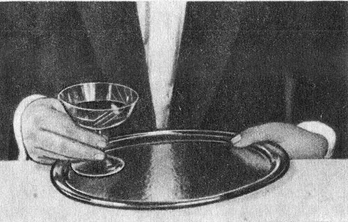
Рис. 8. Так следует держать рюмку, подавая напиток
Украшение коктейлей
Коктейли и другие смешанные напитки должны обладать не только высокими вкусовыми качествами, но и иметь привлекательный вид.
Существует несколько способов украшения коктейлей. Один из них — сахарный ободок на верхней кромке бокала, так называемый «иней». Для образования его края бокала шириной приблизительно 1 см смачивают изнутри и снаружи соком лимонной или апельсиновой дольки, предварительно выжав из нее излишек сока, чтобы он не стекал по стенкам, затем бокал опускают в тарелку с сахарной пудрой или чистым кристаллическим сахаром (рис. 9). Наполняют бокал до нижнего края сахарной корочки.
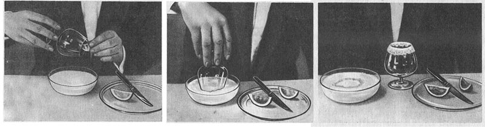
Рис. 9. Украшение бокала «инеем»
«Инеем» украшают преимущественно десертные коктейли и коктейли с фруктами. Если используют апельсиновый сок, то сахарная корочка коктейля получается со слегка розоватым оттенком.
Крепкие коктейли и крюшоны украшают кружком лимона или апельсина. Для этого ломтик надрезают радиально и надевают на край бокала или стакана. Можно использовать и половину ломтика, в этом случае надрез делается между коркой и мякотью.
Для украшения крюшонов могут быть использованы нарезанные кубиками дольки лимона или апельсина либо фигурно нарезанная цедра, а также кружки этих плодов, которые кладут непосредственно в бокал.
Крепкие коктейли, приготовляемые в креманках, можно иногда сбрызнуть лимонным маслом, выжав его из небольшой лимонной корочки (рис. 10). В этом случае поверхность напитка переливается разными цветами радуги, а пахучее лимонное масло придает ему своеобразный аромат.
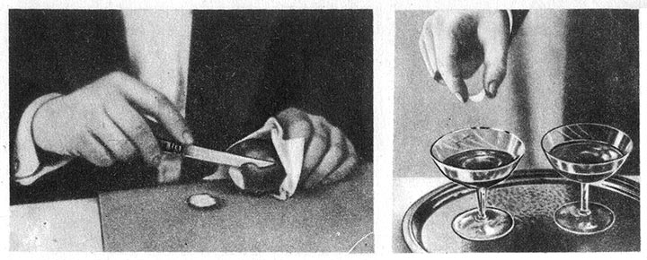
Рис. 10. Сбрызгивание коктейля лимонным маслом
Коктейли с фруктами обычно украшают плодами и ягодами. Фрукты, нарезанные небольшими кубиками, и целые ягоды накалывают на шпажки из дерева или пластмассы, которые опускают в бокал.
В качестве декоративного оформления коктейлей очень часто используется лимонная или апельсиновая цедра. Ее срезают лентой шириной в полсантиметра с половины лимона или апельсина (рис. 11). Один конец ленты закрепляют за верхний край бокала, а другой опускают на дно. Цедра расправляется в шарообразном бокале в виде спирали. Бокал одновременно может быть украшен «инеем».
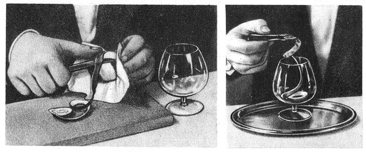
Рис. 11. Украшение бокала спиралью из лимонной цедры
Светлые коктейли можно подавать с кубиками подкрашенного льда. Такой лед приготовляют в бытовых холодильниках, подкрасив воду каким-либо фруктовым сиропом.
Для подачи коктейлей не следует использовать цветное стекло, так как в этом случае описанные способы оформления напитков будут менее эффектны.
На цветной вклейке представлены различные способы украшения смешанных напитков.